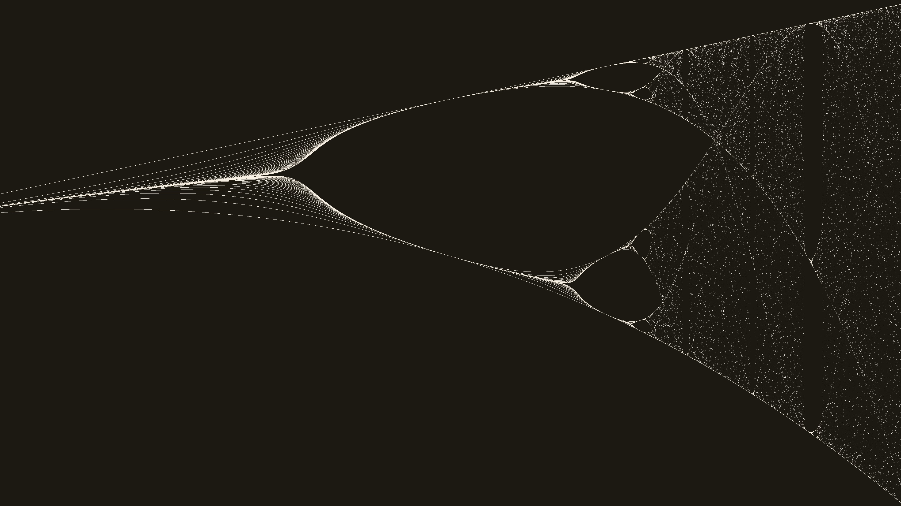
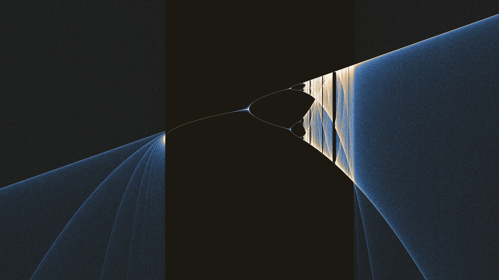
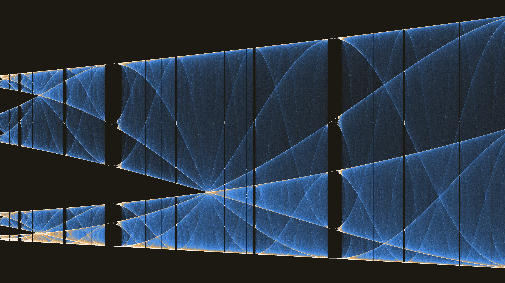
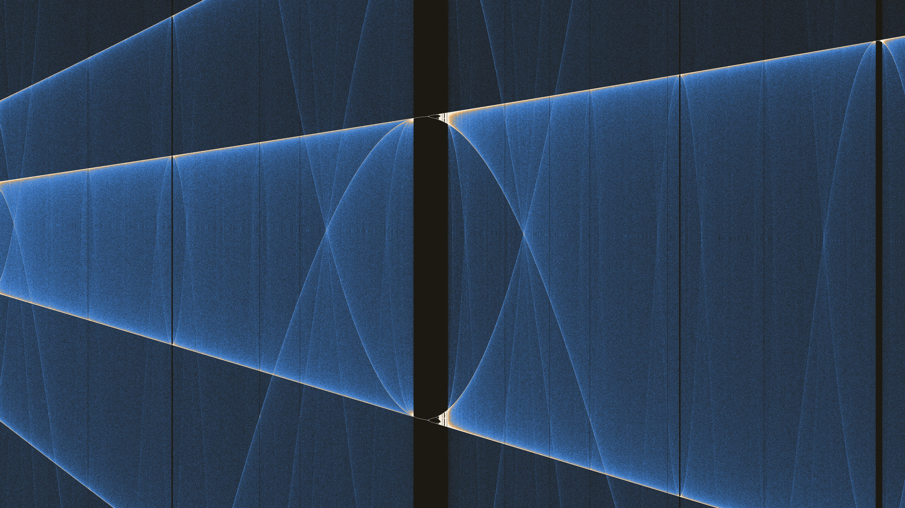
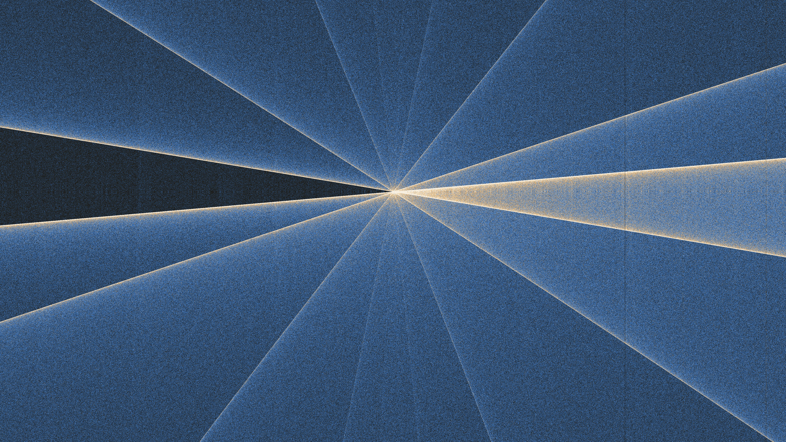
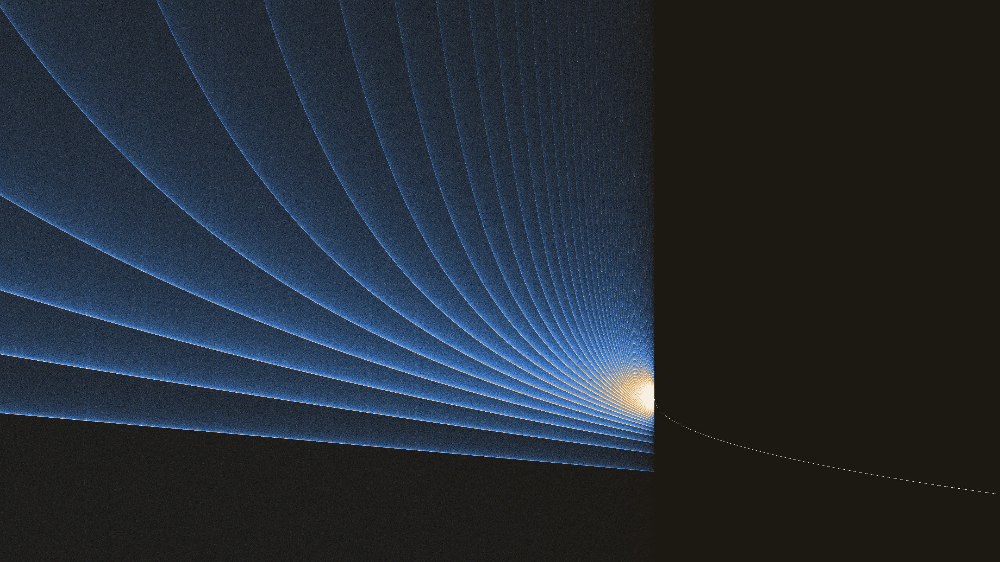

Bifurcation Diagram
LaunchThe logistic map
An interactive viewer for the classic bifurcation diagram of the logistic map — a simple recurrence that produces one of the most recognisable images in chaos theory.
The map itself is almost trivial:
xn+1 = r · xn · (1 − xn)
For each growth rate r along the horizontal axis, the equation is iterated and the long-term values of x are plotted vertically. As r increases, a single stable population splits again and again — period doubling — until the orbit dissolves into chaos, interrupted by quiet windows of order. Dense bands are chaotic attractors; the gaps are periodic islands.
This application builds that picture progressively in the browser: high-precision (fp64) accumulation on the CPU, with WebGPU used only to display the result. You can pan, zoom, retune colour and exposure, and export screenshots at full resolution.
Self-similarity

Zoom in and the cascade repeats. Nested period-doubling forks echo the large-scale diagram at every magnification — a fractal structure discovered in the logistic map and related one-dimensional maps. The same branching motif appears inside chaotic bands and around the edges of periodic windows.
Sinusoidal structure

At high iteration counts, the density field resolves into fine sinusoidal streaks rather than a solid spray of points. These undulating threads are the visible footprint of almost-periodic motion — orbits that wander slowly across the attractor and paint smooth wave-like paths through parameter space.
Waves around a gap

Near the openings of periodic windows, those waves do not simply fade out. They weave around and through miniature copies of the bifurcation diagram itself — self-similar cascades sitting inside the larger chaos, braided with the sinusoidal filaments that fill the surrounding band.
Tight detail

Push further and the strands multiply. Dozens of sinusoids of different amplitudes and phases pack into a narrow region of the diagram, each tracing a slightly different frequency of motion on the attractor. The eye reads them as a woven texture; they are the diagram’s fine-scale bookkeeping of chaotic orbits.
Convergence

Occasionally the threads agree. At isolated crossings, waves of many frequencies pass through a single point — a coincidence in the density field where disparate orbits briefly share the same (r, x). These convergence loci are striking landmarks when exploring at high zoom and long accumulation.
Open the live viewer to pan and zoom the diagram yourself, adjust accumulation and colour, and capture stills of any region you find.